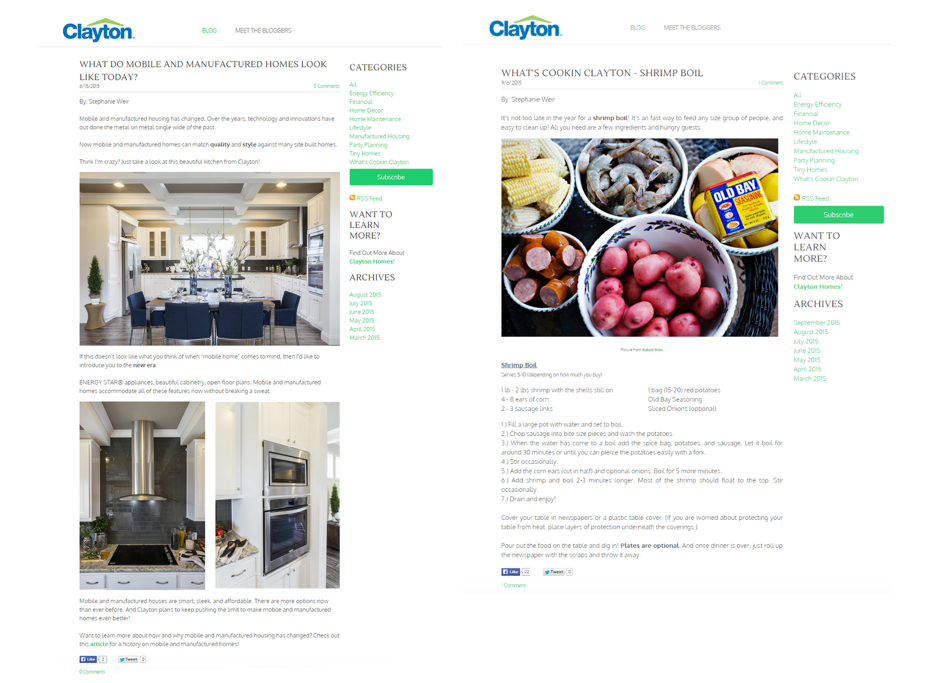

I proposed redesigning the company blog as a year long test to generate social capital and gather insights data. This information was then used for the final blog design when the company rebranded. My process included UX design, visual design, content strategy, and content creation.
Sketch, Weebly
2015
Why redesign the company blog? The company had just hired an agency to assist in a rebrand and was interested in different avenues of influence for their target market. I took the opportunity to present the blog as a test for this purpose.
The blog had been neglected internally and was being outsourced to a content writing company in India, which didn't have any expereince with our product and in turn produced poor quality content. The blog interface was not integrated into the corp website, nor had it been updated recently.
A heuristic evaluation of old blog revealed the following problems:
For the new design, I focused on:
Most users visiting the blog are gathering information about mobile and modular homes. However, there were many questions and scenarios. The challenge was how to develop a design that connects to both past and potential customers.
Top modular and mobile manufacturing competitors tend to host repetitive and sales oriented content. To differentiate Clayton from its competitors, I chose to orient the content around personas' interests.
I worked with the insights team to learn more about who we wanted to target on the blog and what content categories would catch their attention and generate interest in Clayton products. We discovered four main personas of Clayton customers characterized by low income households living in rural areas. From these we chose to focus on two: Brittany and John.
Brittany represents female millenials with young families or just married couples who are buying their first home. Brittany wants to create a happy, healthy environment in her new home and is looking for information to help her achieve this goal. Brittany may search for ideas about interior decorating, lifestyle in a manufactured home, tiny home options, going green, good recipes, and DIY projects.
John represents male heads of household, age group 40-59, who are looking to downsize. John has been around the block and knows a thing or two about traditionally constructed homes, but would like to research the differences about manufactured homes. His interest in topics may range from construction techniques used in manufactured and modular housing, to lawn and manufactured home maintenance, to financing options.

With the first design, I attempted to create a seamless experience for the user by mimicing the company's website formatting. However, due to limited resources, the final design had to be simplified. White space became a large part of the design, so readers would focus on content.
I created two navigation options for the blog, visible on each page. The top navigation was simplified down to two options - the blog page and an author's page. The side navigation, completely visible above the fold, held 9 categories gleaned from the persona insights data, an email subscription box, and RSS feed button. Below this section, instead of a form fill, I created a "Learn More" option, linking back to Clayton's homepage for users interested in a purchase or learning more about Clayton products. Below this I added an archives section organized by month and year. To add a little color, I used the company's green color to accent certain navigation features.
A search bar had been a part of my original design, but I did not have the resources to add this function. However, I added notes for the rebranded blog to incorporate a search bar, so users would have an option to easily search through content.
The main blog page contained four condensed articles. After scrolling down the page, a user would need to click "previous" in order to view more articles. Clicking this option would take the user to another page with the previous 4 articles. Each article contained a title, author's name, and date of publishing. Each author's name was clickable, so if users enjoyed the content written by that author, they could quickly find more article written by her.
Clicking on a condensed article would take a user to another page with the entire article visible. Social buttons and a comments box were added to each article to give users the opportunity to interact with content.
Users could also select a category at any time, and be directed to a page listing all articles tagged for that category. To read an article, users click on the condensed version and are directed to a new page with the full aritcle visible.
Google anaylitics were added to track viewability, sessions, and session duration during test period. The new design doubled page views in six months from on average 3.4k views/ month to 8.3k views/ month. Viewership steadily increased by 35% month over month after the first six months.
During the year long test, I built a writing team to create content based on the GA data. We were able to use these findings to customize content that performed well. Design aspects and content from my project then used for the final blog design during the rebrand.